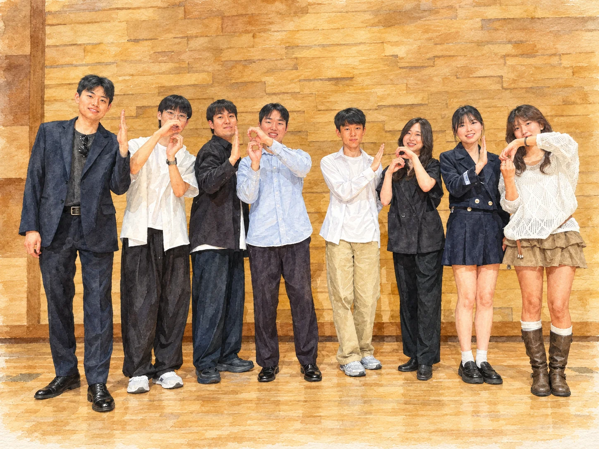

SNU A CAPPELLA · 18TH GENERATION
A few notes
worth keeping.
I'm Hyunsu, an 18th generation tenor in Instru. These are the songs, stages, and people I get to remember.
Mostly in tune. Always together.

Voices, no instruments.
Plenty of people.
Instru (人's Tru) is Seoul National University's a cappella club. Its name brings together person, instrument, and true: honest songs made with the instrument we all carry.
We sing everything from pop to jazz, on our March and September stages and wherever else voices fit. I joined as a tenor in the 18th generation. I stayed for the harmony—and the company.
One night, a few
different harmonies.
September 2026 · Instru regular concert
2026
The September concert
Two teams, four songs, and one final song with everyone.
One more, together.
We closed with Heal The World. The best part of a cappella is that no one has to carry a song alone.
Watch the finale ↗Little scenes,
loud memories.
Each tile opens a day.
Every image is a watercolor reimagining.